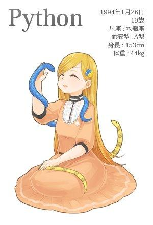
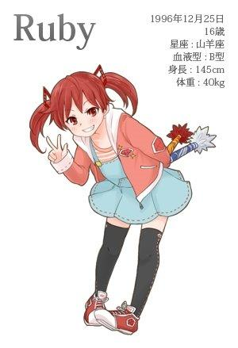
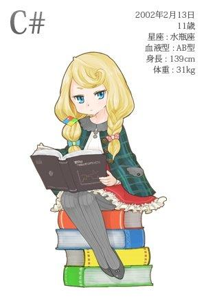
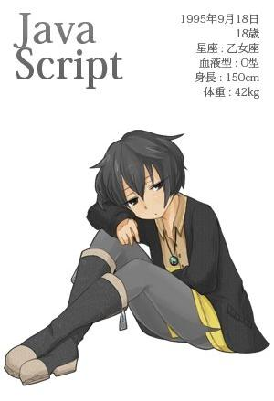
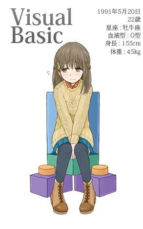
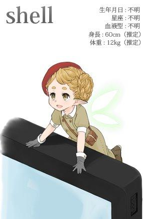

Imagínate, cuandoJava、C++、Python、Ruby、PHP、C#、JSlos lenguajes de programación se convierten en personajes de anime, ¿qué escena sería? Veamos juntos bajo la pluma del escritor japonés Masato Watanabe, qué tipo de "chicas hermosas" son los distintos lenguajes de programación.
Java
Como la chica de carácter taciturno que aparece en "No temer a la lluvia" de Kenji Miyazawa. Desde pequeña, por ser lenta y comer mucho, la tomaban por tonta. Desde que entró a la primaria, se unió al club de atletismo y siguió corriendo; solía obtener buenos resultados en carreras de media y larga distancia, dando una impresión vivaz. Es una chica muy esforzada.
Su situación familiar no era muy buena. Su padre, Sun, era un artista talentoso pero no manejaba bien el dinero; cuando ella tenía 14 años, falleció agotado por las deudas. Fue adoptada por el tío Oracle, y en ese entonces hubo una disputa con el tío Google por su custodia que llegó a los tribunales.
Cuando todos a su alrededor se preocupaban de si, en plena adolescencia y en esa situación, se vendría abajo, ella se mantuvo serena y siguió con su vida de correr y entrenar todos los días.
Sencilla, seria y difícil de llamar inteligente, al entrar a la preparatoria, quizás empezó a preocuparse un poco por el sexo opuesto; fue vista caminando por la calle imitando a escondidas la moda de otras chicas. Aunque recibe críticas negativas como "aunque se esfuerza, quizás está un poco pasada de moda" o "esa ropa no combina con la imagen de Java", también hay muchos que sienten que "inesperadamente es muy mona?".
Le gusta el café, solo el de Indonesia. Ella misma ha dicho que "le gusta más el café que las tres comidas", lo que hace que uno se preocupe un poco: "¿no será un problema para su salud?"

C++
Con piernas esbeltas y rasgos armoniosos. Llamada por muchos "la belleza por excelencia del mundo de las TI", también es famosa por sus talentos en arreglos florales, ceremonia del té, piano y violín, judo, kendo, aikido, etc.
Sus fans son en su mayoría muy acérrimos, y existe un club de fans llamado "Legión Oscura". La Legión Oscura es una organización gigante cuyo tamaño solo es superado por la Francmasonería (Freemason), y la gente común no puede unirse. Se dice que si logras responder preguntas muy fanáticas sobre ella, algún miembro de la legión que lo note vendrá a preguntarte: "¿Quieres entrar en la Legión Oscura?"
Su hermana de padre, Objective-C, se dedicó por completo a tocar el piano; su dedicación fue descubierta por el genio del mundo de las TI, Steve Jobs (llamado también por algunos "rosa púrpura"), y de repente se convirtió en una estrella. En cambio, C++ es conocida por su belleza y talento, y ha mantenido durante años el trono de estrella de la industria. Las dos hermanas realmente son un marcado contraste.
También es famosa por cambiarse con frecuencia de peinado y ropa según su estado de ánimo. Ayer todavía con kimono y cabello negro, hoy aparece con cabello rojo y estilo gótico; por sus transformaciones, no es raro que los fans más casuales se sorprendan: "¿Eh? ¿Hoy es la señorita C++?". Cuando está lejos del mundo laboral, suele vestir ropa de HYSTERIC GLAMOUR en privado.
Su agencia no hace pública su fecha de nacimiento. Aunque también existe la versión de que nació en 1983, este artículo adopta la teoría del 14 de octubre de 1985, muy difundida entre algunos fans. También circulan rumores que parecen ciertos, como "quizás ni ella misma recuerda su cumpleaños...". Más que decir "no sería nada extraño que la señorita C++ no recordara su cumpleaños", más bien se ve como una manifestación de su carácter inocente.

Python
Es una señorita criada en una mansión por el padre Guido. Es originaria de Ámsterdam, Países Bajos, pero se mudó a Estados Unidos cuando era pequeña; su padre también usa inglés en casa, por lo que no sabe hablar muy bien neerlandés.
Es de carácter afable. Lo más famoso es que, cuando escuchó a C++ anunciar que "quiero ir de viaje para cambiar mi imagen. Volveré en 200x" y se fue (resulta que cuando volvió ya era 2011...), ella declaró: "Yo también salgo un poco de viaje, volveré en el año 3000 d.C." y se fue, sin regresar durante varios años.
Aunque tiene esas acciones descuidadas, gracias a la educación del padre Guido, que deseaba "criar a una niña que todos quieran", en realidad al tratar con ella uno siente que es muy accesible.
Hace unos días, fue a trabajar a tiempo parcial en la empresa de un amigo del autor (parece que ahora estudia en la universidad mientras trabaja a tiempo parcial), y la evaluaron como "logra integrarse bien en el trabajo, es diplomática y nos ayudó muchísimo". No dice cosas de más, es educada, y es considerada una presencia única en una industria llena de gente "inocente y que prioriza la libertad".
Se dice que su materia fuerte son las matemáticas; a menudo se la ve resolviendo con facilidad diversos problemas difíciles relacionados con la estadística. Le gusta vestir ropa fresca como vestidos blancos o cárdigans rosa claro.
En realidad también le gustan los reptiles, y se dice que cría serpientes en casa. Los fans suelen discutir temas como "¿qué nombres les pondrá a sus mascotas?". La mayoría llega a la conclusión de que "seguro que es Monty". Si vuela o no, no se sabe. (Se supone que se refiere a The Flying Circus, la obra del grupo cómico británico de seis personas Monty Python, nota del traductor)

Ruby
Es una chica japonesa criada por el papá Matsumoto. Como su cumpleaños es en Navidad, su mayor molestia en la vida es que el regalo de cumpleaños y el de Navidad se convierten en uno solo. Nació en Matsue, prefectura de Shimane, y no ha estado en otras prefecturas excepto por viajes y trabajo.
Como su educación fue de estilo libre y desenfrenado, es activa y muy curiosa. Normalmente es una niña sincera, pero a veces se ve su lado travieso, lo que causa problemas a quienes la rodean. Al verla, uno suele recordar la frase "Just For Fun!" de la industria de las TI.
De pequeña pasaba su vida correteando sola por montañas salvajes; a los 10 años se hizo amiga de una chica llamada Rails, y su vida empezó a cambiar. Mientras jugaban, se detuvieron frente a la puerta de una agencia de talentos y hablaron de hacer actividades artísticas como dúo. Debutaron con el nombre artístico "Ruby y Rails", dedicándose principalmente a modelaje para revistas; también grabaron anuncios de televisión, por lo que mucha gente ha oído sus nombres.
La gente pensaba que, al experimentar diversas actividades artísticas en esta edad tan sensible, su carácter cambiaría un poco; pero en una conversación reciente después de mucho tiempo, se sorprendieron al descubrir que sigue siendo tan libre y desenfrenada en sus acciones como antes de dedicarse al espectáculo. Aunque sus modales son un poco más sobrios, su naturaleza traviesa y vivaz no ha cambiado en absoluto.
Ella, de quien se pensaba que, ya en la preparatoria, casi era hora de empezar a usar ropa más madura, sigue vistiendo Mickey Mouse en la ropa como cuando era niña. Aunque es pequeña y tiene cara de muñeca, y esa ropa le queda bien, ¿de verdad parece una chica de preparatoria así?
Sus fans también se dividen en dos bandos: los que quieren que siga siendo como es ahora y los que quieren verla más madura.

PHP
Es una robot femenina creada con el propósito de fortalecer el mundo web. Su cabello erecto se usa como antena para recibir órdenes de su amo en cualquier momento.
Para tener una textura similar a la humana, su piel está hecha de silicona. Internamente tiene una estructura similar a un servidor blade, y suele usar múltiples servidores redundantes. Por eso pesa un poco más que un humano.
Cuando apareció por primera vez, se podía ver el esqueleto de sus articulaciones móviles, y sus movimientos eran rígidos, muy diferentes a la imagen humana. Sin embargo, después de 6 grandes actualizaciones de versión en 18 años, su comportamiento y lenguaje se han vuelto gradualmente más humanos. Recientemente incluso ha alcanzado un nivel similar al de Hatsune Miku (aún hay una pequeña sensación extraña comparada con un humano, pero ya es bastante natural).
Aunque es torpe y trabaja a trompicones, como sigue los tres principios de la robótica y obedece las órdenes de su amo, mucha gente se vuelve su fan. El sitio oficial de su club de fans "¡PHPer!" permite afiliarse fácilmente sin cuota de membresía, y es una gran organización con el mayor número de miembros en el mundo de las TI.
También hay muchos que la rechazan; suelen haber comentarios como "sus acciones son un poco difíciles de aceptar fisiológicamente", "ojalá fuera más inteligente", "he tenido algo de trato con ella pero siento que todavía es muy diferente a un humano".
Normalmente viste ropa comprada en Forever12 y Shimura. Piensa que, usando ropa barata de moda rápida (fast fashion), puede gastar el dinero ahorrado en los gastos de la máquina. Se puede decir que es la forma típica de gastar de un robot, priorizando la eficiencia. ¿Quizás llegue el día en que también le importe la moda y se preocupe por su apariencia?

C#
Es una chica que recibió educación de élite en la famosa empresa Microsoft, saltó grados y entró a la universidad a los 11 años, y es muy observada por la gente. También es llamada "la niña más poderosa del mundo de las TI".
Como su nombre es muy parecido al de C++, por un tiempo circularon rumores de "¿será hija ilegítima?". En realidad no tienen parentesco directo. También hay reportes de que son parientes lejanos, pero no se sabe cómo es la realidad.
Parece que le gustan los comportamientos maduros y odia jugar como una niña pequeña. Se rumorea que cuando en su cumpleaños recibió de sus padres un peluche llamado Andy, dijo: "¿Qué es esto? Sin sentido. No lo quiero".
Sin embargo, su interés por la comida sigue en la etapa infantil; ha sido vista en varias ocasiones pidiendo menú infantil en la cafetería de la escuela. No le gusta el café; incluso el café en lata dulce la hace fruncir el ceño.
Aunque a veces se ve su lado inesperadamente infantil, en la mayoría de los casos se la ve hablando y tratando a los demás con cortesía. Es una niña que tiene tanto un lado maduro como un lado inocente. Como todavía está en etapa de crecimiento, al verla suele uno sentir cosas como "otra vez creció" o "ya parece más adulta". Siempre espero con ganas ver cómo habrá crecido la próxima vez que la vea.
Suele vestir vestidos de Shirley Temple. Se dice que los elige ella misma, y le quedan muy bien. Su ternura hace que la gente, tanto hombres como mujeres, se vuelvan sus fans.
Su aspiración es, después de graduarse de la universidad, no solo trabajar bajo el ala de Microsoft, la empresa que la vio crecer, sino también destacar en todo el mundo de las TI. Aunque no se le preguntó por planes más detallados, se dice que quiere crear algo que haga que incluso Apple y los pingüinos puedan convivir en armonía. ¿Qué será lo que hará?

JavaScript
Es una chica de 17 años que creció en una zona en disputa. Suele tener una expresión sin emociones y siempre da cierta sensación de distancia al conversar.
Aunque su nombre es muy parecido al de Java, no hay relación de sangre entre las dos. En esa época los nombres como Java eran populares, por lo que sus padres también le pusieron un nombre similar. Ella parece no preocuparse por su nombre; a veces también actúa bajo el seudónimo "ECMA". Ocasionalmente la llaman con el apodo "JS", y a eso le da incluso menos importancia, hasta lo ignora abiertamente.
Su vida fue muy desafortunada. Apenas nació, estalló la guerra en su país. Antes de ser consciente de las cosas, perdió a su madre y se separó de su padre. En las luchas caprichosas de los adultos, aprendió a esconderse en su caparazón y a protegerse a sí misma en el entorno que la rodeaba. Mientras las chicas de su misma edad, con los cambios de la edad, desafiaban diversos estilos, ella, ignorando los comentarios ajenos, seguía encerrada sola en su caparazón. En aquel entonces era un entorno tan difícil que solo así podía sobrevivir.
Debido a una infancia así, su manera de hablar, pensar y tratar con los demás era ligeramente distinta a la de otros niños. Muchas personas, al hablar con ella, se preocupaban por cómo decirlo. Sin embargo, también había quienes le atribuían una forma de pensar simple y de una sola vía, con la impresión de que era "fácil de tratar" y "en cierto modo, muy comprensible".
Ahora, su país avanza hacia la dirección de esforzarse por resolver los conflictos y abrir nuevas tierras para vivir. Aunque los adultos siguen luchando entre sí caprichosamente, al menos en estos últimos años ya no se han producido guerras de odio mutuo y matanzas como antes.
En su patria que comienza a renacer, ¿podrá vivir feliz ahora? ¿Cuándo podremos verla reír igual que las chicas de su edad?

Perl
Perl nació en diciembre de 1987, en el hogar de los señores Wall en Estados Unidos. Su padre, Larry, era experto en informática y lingüística; su madre también se dedicaba al Renacimiento medieval y a la lingüística. Perl creció junto a unos padres con una educación tan elevada.
Aunque la educación de su padre era estricta, también le dio a Perl mucha libertad. Una frase que su padre solía decir durante el proceso educativo era: "Hay más de una forma de hacerlo". (There's more than one way to do it)
Cuando piensas en lograr algo, no hay solo un método para conseguirlo. Se pueden considerar diversos métodos. Este estilo educativo de su padre influyó enormemente en la formación de su personalidad.
"¿Qué pasaría si hago esto?" ... "¿Y si hago aquello?" ... Creció desplegando las alas de la curiosidad y poco a poco descubrió su talento en la "invención". Nació Perl, la inventora sin parangón.
En los veinte años desde que se embarcó en el camino de la inventora, sus inventos llegan a 128 890 (cifra estadística de enero de 2014). Sus inventos van desde juguetes sin utilidad hasta inventos beneficiosos que resolvieron muchos problemas del mundo. Los prototipos de los objetos que inventó fueron donados todos al Museo CPAN, y cualquiera puede consultarlos.
A día de hoy, sin importar si son prácticos o no, ella sigue creando nuevos inventos que le apetece hacer. En una entrevista, bromeando, dijo: "Más que una inventora, soy una máquina de producir toda clase de chatarra". Su sonrisa mostrando los dientes es muy inspiradora.
A Perl no le importa mucho la ropa. Normalmente, como le resulta molesto al ajustar las máquinas, viste ropa casual que sea fácil de mover. Se dice que la chaqueta de plumón que usa a menudo últimamente la compró en WEGO, en Ameyoko (una calle comercial en Ueno, Tokio). Su comida favorita son las fresas. Ella dice que, durante el trabajo, las fresas son el alimento más adecuado para un cerebro fatigado por mantener la concentración.

Lenguaje C
La diosa que sostiene este mundo, también llamada "Santísima Madre".
No hay consenso sobre la fecha de nacimiento de C. Unos dicen que existía en este mundo antes del Génesis (es decir, alrededor del 1 de enero de 1970), y otros que nació algo después, hacia 1972.
Ella es una diosa, por lo tanto, pensar algo como "si nació alrededor de 1970, su edad actual sería..." es un acto de incredulidad. Nunca pienses algo así.
Su nombre es la tercera letra del alfabeto, "C". Según los registros de los libros históricos del Nuevo Testamento, antes de ella existió una diosa llamada B. Algunos materiales indican que "Ken y Dennis crearon a B, pero no quedaron satisfechos. Después, Dennis y otros crearon juntos a C".
En el mundo hay muchísimos fieles suyos. Sin embargo, durante un tiempo no hubo una biblia que transmitiera correctamente sus enseñanzas. Aunque los poemas que dejaron Dennis y Brian originalmente cumplían esa misión, la gente deseaba palabras más claras. Después, muchas personas doctas recopilaron y editaron diversas anécdotas, y redactaron una biblia que transmitiera fielmente su doctrina.
Este libro ha sido revisado en múltiples ocasiones hasta hoy; según el año de revisión, se le llama C89, C99, C11, etc.
La gente común no puede conversar directamente con C. Solo a quienes han acumulado suficiente práctica se les permite comunicarse con ella.
La práctica es muy rigurosa: se requiere entender problemas como el del "puntero a puntero", y se exige resolver con un 100% de éxito el problema de "malloc/free", que es difícil de superar por mucho que uno se esfuerce en la práctica. Debido a esos antecedentes, realmente son muy pocas las personas que pueden mantener una conversación cotidiana con ella.
Sin embargo, a través de quienes sí pueden comunicarse con ella, han nacido en el mundo muy diversos conocimientos y tecnologías. Aunque nunca hayas visto su apariencia, su amor tierno te rodea ciertamente cada día.

Visual Basic
Su apellido es Basic, su nombre es Visual, y también hay muchos que la llaman por su apodo: VB. Su nombre de pequeña es Ruby (no tiene relación con ese Ruby). Desde niña, cierto capitalista (no se puede decir su nombre) se fijó en ella, y toda la familia quedó viviendo al lado del capitalista. En aquella época su nombre cambió muchas veces; solo ahora se ha fijado este nombre. Tiene un entorno familiar bastante complicado.
En cuanto a la razón por la que el capitalista quiso adoptarla cuando aún era muy pequeña, según rumores no fiables, vio en ella el reflejo de la señorita Basic, a quien había admirado desde hacía tiempo. Adoptar a una niña con un temperamento parecido al de la mujer que uno admira es poner en práctica el llamado plan Genji.
Quizá los jóvenes no lo sepan, pero la señorita Basic fue modelo de portada de la revista "Microcomputer Basic Magazine", y en aquella época era una mujer semejante a Madonna, admirada por todos. De hecho, entre las personas que conozco, hay muchísimas que de jóvenes quedaron prendadas de ella.
VB, mientras recibía una educación estricta, también desarrollaba su naturaleza en el ámbito de sus intereses. Tiene un talento único para las manualidades y los adornos. Verla hacer adornos de cuentas es como magia: con solo mover las manos, en un instante puede hacer un collar.
Cuando ella tenía 10 años, llegó a la casa del capitalista una nueva hija adoptiva. (Esa de la que la gente suele hablar).
Debido a esto, ahora ella se esfuerza en casa por ser una buena hermana mayor. Sin embargo, ella, que de por sí es tímida y poco habladora, a menudo acaba siendo sermoneada por su hermana menor, diez años menor que ella, seria y de largos discursos. ¡Ánimo, señorita VB!
De pequeña, VB solía llevar ropa de Emily Temple que le compraban sus padres; ahora viste más a menudo ropa de Lowrys Farm que se compra ella misma. Este año se graduará de la universidad y entrará en la sociedad; su objetivo es un estilo maduro propio de la señorita VB.

R
Ella nació el 29 de febrero de 2000. Precisamente aquel día maldito que ocurre una vez cada 400 años y que permanece en la memoria de la gente. Aunque nació en un día muy de mal agüero, ella creció hasta ser una niña inteligente y querida por todos.
Su madre se llama S. Aunque en el mundo de la mitología C nació después de B, su nombre es R, el anterior a S. Estos son nombres difíciles de encontrar en Google. (Nota: ¡porque son demasiado cortos!)
Su madre era muy buena en matemáticas y asistente de un estadístico; R también continuó esa cualidad. Desde pequeña fue muy buena en matemáticas, y ya en la época de primaria había alcanzado el nivel de resolver rápidamente problemas de matemáticas de secundaria. Además, le interesan mucho las figuras geométricas; a menudo se la ve dibujando diversas figuras bidimensionales y tridimensionales, y tras dibujarlas, mostrando una expresión satisfecha y placentera, a solas. Es una niña un poco rara.
R, aunque es muy buena en matemáticas, es algo inferior en expresión verbal. El otro día, cuando la entrevisté, quería responder a las preguntas que le hacían pero no encontraba las palabras adecuadas; en su lugar, dibujó —zas— un diagrama de dispersión y dijo: "algo así". Quizá a sus ojos, expresar este mundo con palabras es tan complicado como plegar complejas fórmulas matemáticas.
No se preocupa mucho por la ropa; suele llevar vestidos y camisas que no están ni apretados ni holgados.
No tiene noción de preguntas como cuánto costaban o dónde se compraban los vestidos que sus padres le compraban. Simplemente, le presta atención al ángulo de apertura del vuelo de la falda de vuelo que compró recientemente.
Su sueño es convertirse en estadística en el futuro; aunque solo tiene 14 años, a menudo se mezcla entre estudiantes universitarios resolviendo todo tipo de problemas todos los días. Últimamente la universidad ya no le basta, y además le ha pedido a sus padres entrar y salir de diversos institutos de investigación.

Scala
Entre la religión O y la religión F hubo una larga guerra religiosa. Scala es una hereje nacida del matrimonio entre un sacerdote y una monja de esas dos religiones. Nada más nacer, provocó un feroz enfrentamiento entre las dos familias; sus padres, al percibir el peligro, la enviaron a casa del maestro Odersky, de la escuela privada JVM, para criarla como hija adoptiva.
Ahora, en comparación con aquel entonces, las dos religiones ya muestran señales de mejora en sus relaciones, y algunos la consideran un símbolo de la fusión de las dos familias. Sin embargo, todavía hay muchas personas con una fuerte actitud de confrontación, y a menudo surgen controversias por su existencia. La gente de la religión F cree que su existencia no reconoce plenamente la esencia de F, mientras que la gente de la religión O la encuentra difícil de entender por estar mezclada con F.
Aunque nació en un entorno tan complicado, ella misma no se preocupa por el entorno que la rodea, sino que va con mucha calma a las iglesias de ambos bandos a tomar pan, y vive con fortaleza. Son muchos los que, conmovidos por su actitud inocente y despreocupada, se han hecho fans suyos.
Scala parece sentir aprecio por la señorita Java, que estudia en la sección de grados superiores de la misma escuela, y suele ir a buscarla en los descansos. La señorita Java tampoco la desprecia; a menudo, como una hermana mayor, la sienta en sus rodillas y le acaricia la cabeza con suavidad. Aunque en una ocasión Scala enfureció mucho a Java al hacerle una travesura atando con una cuerda roja al muñeco de Duke que a Java le gusta, aparte de eso casi nunca han discutido. Las dos son como auténticas hermanas.
Scala, que tiene un padre muy conocedor y una hermana mayor cariñosa, quizá ahora, en contra de las complicadas circunstancias de su origen, esté viviendo en realidad muy feliz.
A ella le gustan los colores vivos y los estampados en los vestidos, y a menudo viste ropa de Algonquin. Aunque es una moda bastante personal, en ella, que tiene una personalidad innata, resulta extrañamente natural.

Shell
Es un hada avistada varios años después del Génesis (1 de enero de 1970). Se aloja en los hogares y tiene un estilo de vida similar al de los brownies. Cuando les pides tareas domésticas o quehaceres, son niños dóciles que responden dos veces y aceptan.
Ellas no suelen aparecer en lugares donde existen los humanos; como no entienden el idioma, se comunican por cartas. Si lo que se les encarga se dice de forma ambigua, puede causar malentendidos y ocurrir algo terrible. El truco para esto es escribir claramente las tareas que se les piden en orden, como "haz aquello | haz esto > ponlo aquí". Si entienden bien lo encargado, lo resolverán todo durante la noche. Si han completado bien el trabajo, no olvides ponerles, en la noche del día siguiente, unos terrones de azúcar como agradecimiento.
En Shell hay diversas razas. Entre las razas actualmente confirmadas, las más conocidas son "ba", "c", "k", "tc", "z", etc. Su vestimenta varía según la raza. El individuo que yo presencié era uno de unos 60 cm de altura que vestía ropa infantil de Burberry. Probablemente la raza que la gente ha visto más es la "ba". Personalmente, también me gustaría encontrarme con la raza "z", que es más alta y tiene orejas puntiagudas; aunque ahora sé cómo escribir cartas, nunca he visto un espécimen real.
Aunque viven en la misma casa, pocas personas tienen la oportunidad de verlas, y tampoco saben cómo encontrarse con ellas.
Hay una teoría que dice que si cada día llevas a cabo el ritual de programar hasta la medianoche, y en el estado en el que apenas levantas la cabeza sostenido por la cafeína, miras de repente hacia la pantalla, puedes ver su figura. De hecho, yo me la encontré también mientras trabajaba hasta tarde escribiendo programas en la empresa.
Los individuos de Shell son muy numerosos; se dice que en cada hogar hay uno. En las casas de todos, de hecho, es posible que muchas de ellas estén viviendo y esperando recibir cartas.

ActionScript
Una niña de 13 años nacida en una región en disputa.
Su padre era un famoso diseñador, pero cuando ella tenía 5 años, él se vio envuelto en la guerra y murió. Afortunadamente, ella era muy pequeña entonces, y su tío Adobe, que la adoptó, la crió con mucho esmero, sin dejarle grandes cicatrices en el corazón. El tío, al igual que su padre, era diseñador. Quizás en su memoria ya haya mezclado a las dos personas.
El país donde ella vive y el país donde vive JavaScript son vecinos; ambos países están compuestos por la misma etnia ECMA. Para los extranjeros, JavaScript y ActionScript son muy parecidas en apariencia. En efecto, al mirar sus fotos de la infancia, se parecen mucho en tono de piel y rasgos faciales; pero ¿qué ocurriría si se miraran las fotos de ellas ya crecidas?
Ella se esfuerza teniendo como lema "esforzarse por la patria y por el tío", pero sus esfuerzos a menudo no se ven recompensados; es una chica con poca suerte.
Cuando en la región en disputa se rumoreaba que se implementaría una nueva lengua oficial, ella quiso contribuir a la era de paz que se avecinaba y empezó a aprender ese idioma antes que nadie. Sin embargo, justo cuando por fin consiguió hablarlo bien, la propuesta de adoptar ese idioma como lengua oficial se vino abajo.
Cuando acababa de empezar a aprender diseño para dispositivos móviles, pensaba que hacerse fuerte en el ámbito móvil sería útil para el trabajo de su tío y también podría reducir la deuda externa de su patria. Mientras se esforzaba con esas ideas en mente, un trato de la empresa que dirigía su tío fue cancelado a la fuerza por una gigantesca compañía de terminales móviles, y el trabajo relacionado con el móvil se redujo drásticamente.
Ella, que se esfuerza muchísimo pero a menudo no recibe recompensa, permanece de pie en esta tierra donde aún hoy no se ve el fin del conflicto, y continúa avanzando.

Algún día el esfuerzo será recompensado, ¿no? Le deseo que dentro de 10 años siga a salvo, avanzando y viviendo sin cesar.
Fuente: http://www.oschina.net/news/53201/programming-language-as-a-girl
Haz clic para compartir notas
<p style="font-size:14px;">¡La nota debe ser una extensión del contenido de este artículo!</p><br> <p style="font-size:12px;"><a href="../tougao.html" target="_blank">Para enviar un artículo, haz clic aquí</a></p> <p style="font-size:14px;"><a href="./runoob-user-test-intro.html" target="_blank">Cómo obtener el código de invitación para registrarse</a></p> <h3 class="text-muted"><i class="fa fa-info-circle" aria-hidden="true"></i> ¡Antes de compartir notas debes <a href=".." class="runoob-pop">iniciar sesión</a>!</h3> <p><a href="./runoob-user-test-intro.html" target="_blank">Cómo obtener el código de invitación para registrarse</a></p>